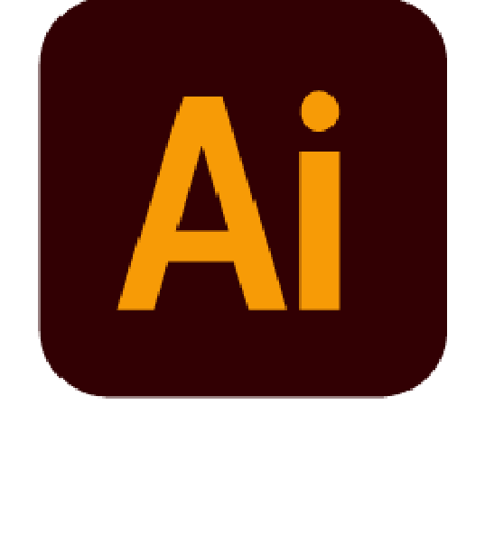
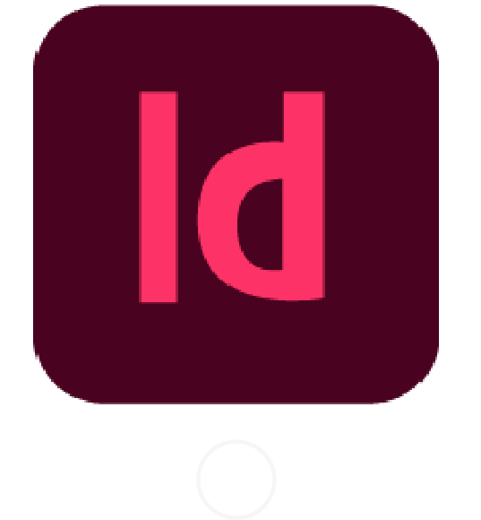
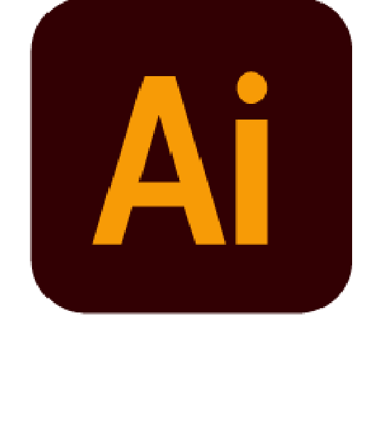
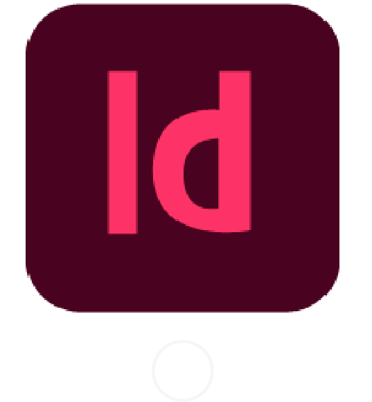

Sou ilustradora digital e tradicional, faço comissões de
desenho digital e no momento estou cursando design visual
na universidade positivo. Faço aulas de desenho tradicional
a três anos.
Tenho interesse em áreas da arte e do design e estou sempre
aberta a novas experiências e aprendizados. Trabalho bem em
equipe, sou organizada e criativa em uma busca constante
pelo conhecimento. Apaixonada por inspirar pessoas com a
minha arte.
Ampliar minha áre de atuação, testar novas áreas como design de embalagem, UI/UX, animação, ect.
Também criar uma presença online consistente, crescer minhas redes sociais, instagram, twitter.
E continuar a aprender mais sobre novas técnicas e o mundo do design.
 




